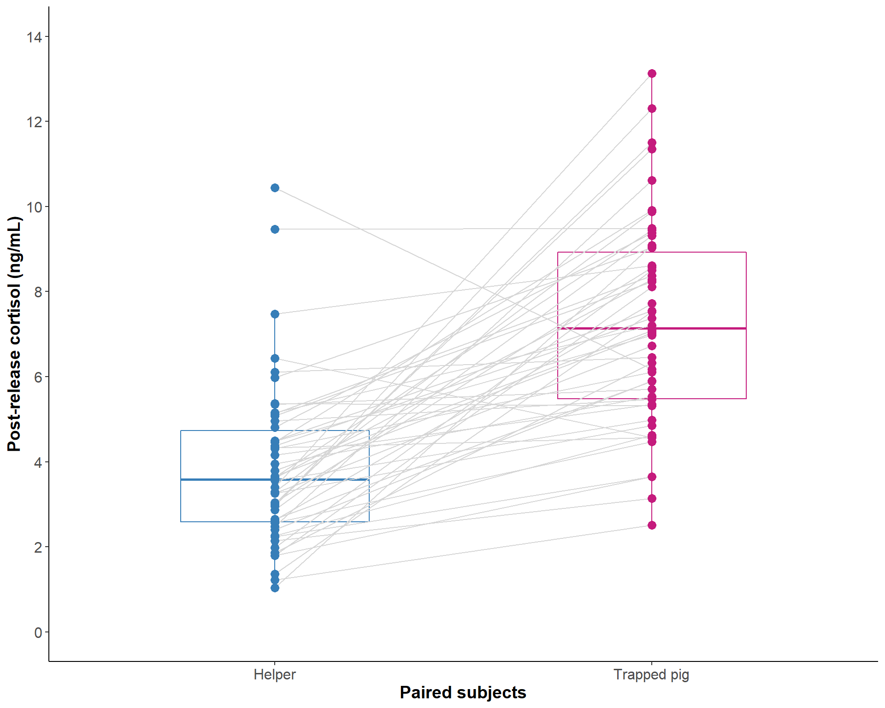

library(tidyverse) # tidy universe
library(viridis) # color scale
library(rstatix) # get_summary_stats()
library(ggpubr) # paired ggplotCortisol in matched helper and trapped pigs
Libraries
set.seed(1989)Data
Comparison of post-release salivary cortisol in trapped pigs and their helpers for a subset of n = 50 trials.
Read data
dat <- read_csv("../data/cortisol-helper-trapped.csv")Rows: 50 Columns: 12
── Column specification ────────────────────────────────────────────────────────
Delimiter: ","
chr (7): testday, context, sample, time, status, time_matched, uniq.group
dbl (4): ID_trapped, cort_trapped, ID_potentialhelper, cort_potential_helper
date (1): date
ℹ Use `spec()` to retrieve the full column specification for this data.
ℹ Specify the column types or set `show_col_types = FALSE` to quiet this message.Data summary
dat %>%
rstatix::get_summary_stats(c(cort_potential_helper, cort_trapped),
type = "common")# A tibble: 2 × 10
variable n min max median iqr mean sd se ci
<chr> <dbl> <dbl> <dbl> <dbl> <dbl> <dbl> <dbl> <dbl> <dbl>
1 cort_potential_helper 50 1.04 10.4 3.59 2.15 3.86 1.9 0.269 0.54
2 cort_trapped 50 2.51 13.1 7.14 3.44 7.27 2.41 0.341 0.685Paired t-test
t.test(dat$cort_trapped, dat$cort_potential_helper,
paired = TRUE, alternative = "two.sided")
Paired t-test
data: dat$cort_trapped and dat$cort_potential_helper
t = 8.1406, df = 49, p-value = 1.166e-10
alternative hypothesis: true mean difference is not equal to 0
95 percent confidence interval:
2.568303 4.251937
sample estimates:
mean difference
3.41012 Pearson correlation
cor.test(dat$cort_trapped, dat$cort_potential_helper,
method = "pearson")
Pearson's product-moment correlation
data: dat$cort_trapped and dat$cort_potential_helper
t = 0.48596, df = 48, p-value = 0.6292
alternative hypothesis: true correlation is not equal to 0
95 percent confidence interval:
-0.2125160 0.3416641
sample estimates:
cor
0.06997072 Plot
plot <- dat %>%
ggpaired(
cond1 = "cort_potential_helper",
cond2 = "cort_trapped",
color = "condition",
palette = c("#377EB8","#C51B7D"),
line.color = "gray84",
line.size = 0.5,
point.size = 3,
alpha = 0.8) +
scale_x_discrete(labels = c("Helper", "Trapped pig")) +
scale_y_continuous(limits = c(0, 14), breaks = seq(0, 14, by = 2)) +
labs(x = "Paired subjects",
y = "Post-release cortisol (ng/mL)") +
my_theme +
theme(legend.position = "none")Warning: `gather_()` was deprecated in tidyr 1.2.0.
Please use `gather()` instead.plot
How to cite R
“All analyses were performed using R Statistical Software (version 4.2.0; R Core Team 2022)”.
Reference: R Core Team (2022). R: A language and environment for statistical computing. R Foundation for Statistical Computing, Vienna, Austria. URL https://www.R-project.org/.
citation()
To cite R in publications use:
R Core Team (2022). R: A language and environment for statistical
computing. R Foundation for Statistical Computing, Vienna, Austria.
URL https://www.R-project.org/.
Ein BibTeX-Eintrag für LaTeX-Benutzer ist
@Manual{,
title = {R: A Language and Environment for Statistical Computing},
author = {{R Core Team}},
organization = {R Foundation for Statistical Computing},
address = {Vienna, Austria},
year = {2022},
url = {https://www.R-project.org/},
}
We have invested a lot of time and effort in creating R, please cite it
when using it for data analysis. See also 'citation("pkgname")' for
citing R packages.version$version.string[1] "R version 4.2.0 (2022-04-22 ucrt)"citation("tidyverse")
Um Paket 'tidyverse' in Publikationen zu zitieren, nutzen Sie bitte:
Wickham et al., (2019). Welcome to the tidyverse. Journal of Open
Source Software, 4(43), 1686, https://doi.org/10.21105/joss.01686
Ein BibTeX-Eintrag für LaTeX-Benutzer ist
@Article{,
title = {Welcome to the {tidyverse}},
author = {Hadley Wickham and Mara Averick and Jennifer Bryan and Winston Chang and Lucy D'Agostino McGowan and Romain François and Garrett Grolemund and Alex Hayes and Lionel Henry and Jim Hester and Max Kuhn and Thomas Lin Pedersen and Evan Miller and Stephan Milton Bache and Kirill Müller and Jeroen Ooms and David Robinson and Dana Paige Seidel and Vitalie Spinu and Kohske Takahashi and Davis Vaughan and Claus Wilke and Kara Woo and Hiroaki Yutani},
year = {2019},
journal = {Journal of Open Source Software},
volume = {4},
number = {43},
pages = {1686},
doi = {10.21105/joss.01686},
}citation("viridis")
To cite viridis/viridisLite in publications use:
Simon Garnier, Noam Ross, Robert Rudis, Antônio P. Camargo, Marco
Sciaini, and Cédric Scherer (2021). Rvision - Colorblind-Friendly
Color Maps for R. R package version 0.6.2.
Ein BibTeX-Eintrag für LaTeX-Benutzer ist
@Manual{,
title = {{viridis} - Colorblind-Friendly Color Maps for R},
author = {{Garnier} and {Simon} and {Ross} and {Noam} and {Rudis} and {Robert} and {Camargo} and Antônio Pedro and {Sciaini} and {Marco} and {Scherer} and {Cédric}},
year = {2021},
note = {R package version 0.6.2},
url = {https://sjmgarnier.github.io/viridis/},
doi = {10.5281/zenodo.4679424},
doi = {10.5281/zenodo.4679424},
}citation("ggpubr")
Um Paket 'ggpubr' in Publikationen zu zitieren, nutzen Sie bitte:
Kassambara A (2020). _ggpubr: 'ggplot2' Based Publication Ready
Plots_. R package version 0.4.0,
<https://CRAN.R-project.org/package=ggpubr>.
Ein BibTeX-Eintrag für LaTeX-Benutzer ist
@Manual{,
title = {ggpubr: 'ggplot2' Based Publication Ready Plots},
author = {Alboukadel Kassambara},
year = {2020},
note = {R package version 0.4.0},
url = {https://CRAN.R-project.org/package=ggpubr},
}Session Info
sessionInfo()R version 4.2.0 (2022-04-22 ucrt)
Platform: x86_64-w64-mingw32/x64 (64-bit)
Running under: Windows 10 x64 (build 19045)
Matrix products: default
locale:
[1] LC_COLLATE=German_Germany.utf8 LC_CTYPE=German_Germany.utf8
[3] LC_MONETARY=German_Germany.utf8 LC_NUMERIC=C
[5] LC_TIME=German_Germany.utf8
attached base packages:
[1] stats graphics grDevices utils datasets methods base
other attached packages:
[1] ggpubr_0.4.0 rstatix_0.7.0 viridis_0.6.2 viridisLite_0.4.1
[5] forcats_0.5.1 stringr_1.4.0 dplyr_1.0.9 purrr_0.3.4
[9] readr_2.1.2 tidyr_1.2.0 tibble_3.1.7 ggplot2_3.3.6
[13] tidyverse_1.3.1
loaded via a namespace (and not attached):
[1] lubridate_1.8.0 assertthat_0.2.1 digest_0.6.29 utf8_1.2.2
[5] R6_2.5.1 cellranger_1.1.0 backports_1.4.1 reprex_2.0.2
[9] evaluate_0.16 httr_1.4.4 pillar_1.8.1 rlang_1.0.6
[13] readxl_1.4.0 rstudioapi_0.14 car_3.1-0 rmarkdown_2.16
[17] htmlwidgets_1.5.4 bit_4.0.4 munsell_0.5.0 broom_1.0.1
[21] compiler_4.2.0 modelr_0.1.9 xfun_0.31 pkgconfig_2.0.3
[25] htmltools_0.5.2 tidyselect_1.1.2 gridExtra_2.3 fansi_1.0.3
[29] crayon_1.5.1 tzdb_0.3.0 dbplyr_2.2.1 withr_2.5.0
[33] grid_4.2.0 jsonlite_1.8.0 gtable_0.3.1 lifecycle_1.0.2
[37] DBI_1.1.3 magrittr_2.0.3 scales_1.2.1 vroom_1.5.7
[41] cli_3.3.0 stringi_1.7.6 carData_3.0-5 farver_2.1.0
[45] ggsignif_0.6.3 fs_1.5.2 xml2_1.3.3 ellipsis_0.3.2
[49] generics_0.1.3 vctrs_0.4.1 tools_4.2.0 bit64_4.0.5
[53] glue_1.6.2 hms_1.1.2 parallel_4.2.0 abind_1.4-5
[57] fastmap_1.1.0 yaml_2.3.5 colorspace_2.0-3 rvest_1.0.3
[61] knitr_1.40 haven_2.5.0